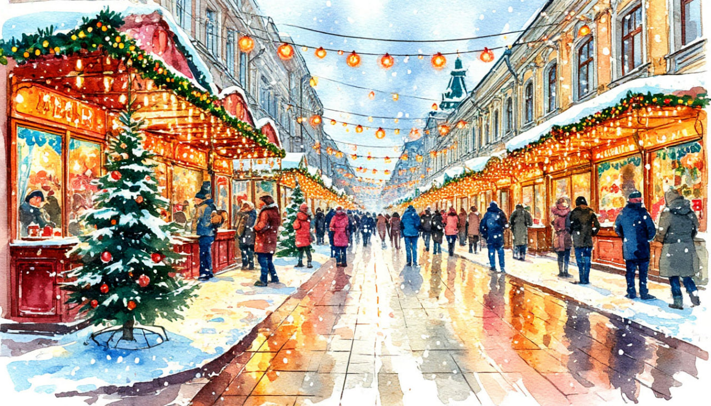

Новый год: Нижегородская ярмарка.

Даты тура: со 2 января 2026 года (пт) по 6 января 2026 года (пн)
Стоимость тура:
- 31 900 р. - взрослый
- 31 700 р. - пенсионеры/школьники
- 38 900 р./чел - одноместное размещение
Программа тура:
1 день: Отправление
- 22-00- выезд из Костромы от ТРЦ "РИО", правый угол от центрального входа
2 день: Нижний Новгород
- Прибытие в Нижний Новгород.
- Завтрак.
- Обзорная экскурсия "Нижний - карман России".
- Сейчас Нижний Новгород перестал быть «третьей столицей», зато тут же получил звание «Столица Поволжья», и теперь является центром Приволжского Федерального округа и одновременно – крупнейшим его городом. Нижний — город-"миллионник", пятый по численности населения город в России — с большим числом достопримечательностей и памятников архитектуры.
- В ходе экскурсии Вы увидите площадь Минина и Пожарского, Александровский сад, Чкаловскую лестницу, прогуляетесь по главной пешеходной улице города, называемой в народе "нижегородский Арбат" – Большой Покровской, посетите Благовещенский монастырь, Рождественскую церковь, Стрелку – место слияния Волги и Оки, собор Александра Невского, Нижегородская ярмарка.
- Переправа туда-обратно через Волгу по канатной дороге до города Бор. Нижегородская канатная дорога является единственной канатной дорогой в России и Европе с пролетом над водной поверхностью 861,21 м (официальный рекорд России). Лучшие селфи на Волге!
- Обед.
- Экскурсия в Нижегородский Кремль - уникальное архитектурное сооружение, выдержавшее бесчисленное количество татарских набегов и не сдавшее своих позиций даже в тяжелые времена смуты и войн, было и остается сердцем города вот уже более шестисот лет.
- В отличие от Московского, Нижегородский кремль не обладает ярко выраженным лоском величия, но именно в его стенах можно ощутить настоящий дух русской старины и прикоснуться к полузабытой истории государства. Расположенная на возвышенности у слияния Волги и Оки крепость открывает со своих стен невероятный вид на эти реки и раскинувшиеся у своего подножия кварталы города.
- Размещение в отеле. Свободное время.
- Свободное время, в которое вы можете самостоятельно совершить прогулку по пешеходной улице Покровке.
- Большая Покровская улица – одна из главных улиц Нижнего Новгорода, берущая своё начало возле стен древнего кремля, на площади, названной в честь Минина и Пожарского, и идущая на юго-восток мимо площадей Театральная и Горького до площади Лядова.
- Большую Покровскую улицу считают едва ли не самой старой в городе. Она появилась в Средневековье и первоначально носила имя Большой Никольской, а свое современное название она получила 1820-е годы в память о Покровской церкви. Как главная городская артерия улица оформилась в XVIII веке.
- Сегодня Покровка (так по-свойски её называют нижегородцы) - это одно из самых популярных мест города. Жители и гости города приходят сюда, чтобы погулять по историческому центру, полюбоваться живописными фасадами зданий и красивыми памятниками, заглянуть в магазины и сувенирные лавки, а также приятно провести время в уютных кафе и ресторанах.
3 день: Городец*
- Завтрак.
- Свободное время на новогодних площадках Нижнего Новгорода. Вы можете самостоятельно поучаствовать в празднованиях на улицах города. А также сделать фото-паузы у бронзовых памятников города.
- Посетите зоопарк "Лимпопо" или зону экстремальных аттракционов в Сормовском парке. Посетите знаменитую Нижегородскую ярмарку, которую исторически нескромно называли «восьмым чудом света». Ежегодно здесь проходили крупнейшие торги Российской империи, на которые съезжались купцы из разных стран. На нижегородской ярмарке был гостиный двор, парадная площадь и более 2500 торговых лавок. В Советские годы ярмарка была ликвидирована, а большая часть сооружений уничтожена. Сейчас на территории, где раньше проходила ярмарка, находятся шесть павильонов. Наиболее ярким является сохранившийся с дореволюционных времен Главный ярморочный дом. В новогодние каникулы здесь открывается невероятный рождественский базар, который по своему размаху не уступает европейским!
- ИЛИ
- Экскурсия в древний Городец — город мастеров (по желанию и за доп. плату)*.
- Отправление в Городец (Нижний Новгород → Городец: 65 км) - самый древний город Нижегородской области, в котором каждая улица встречает резными яркими домами и запахом пряников.
- Обзорная экскурсия по Музейному кварталу, во время которой Вы узнаете о прошлом и настоящем старинного купеческого города, прогуляетесь по удивительно красивым улочкам, где едва ли не каждый дом уникален своей ажурной резьбой.
- Экскурсия по мастерским музейно-туристического комплекса «Город мастеров», в ходе которой Вы познакомитесь с историей промыслов и ремесел Городецкой земли: глиняной свистулькой, лозоплетением, гончарным делом, резьбой по дереву, ткачеством, золотной вышивкой, посетите сувенирные отделы с изделиями народных художественных промыслов и работами, выполненными мастерами комплекса.
- Мастер-класс по глиняной игрушке или городецкой росписи (на усмотрение оператора).
- Чайная церемония с Иван-чаем, ароматным печатным пряником и сливочной помадкой.
- Отправление в отель.
4 день: Хохлома
- Завтрак.
- Отправление в Семенов (Нижний Новгород → Cеменов: 78 км).
- Город отличается довольно интересным строением, за что и получил своё второе название - «маленький Париж». План поселения утвердила Екатерина II. Это должен был быть огромный квадрат, который состоит из 16-ти меньших квадратов. Две линии улиц располагались по диагонали, а на их пересечении – центральная площадь. Отчасти это строение сохранилось и по сегодняшний день.
- Экскурсия в музей «Золотая Хохлома». В окрестностях Семенова в 19 веке производили десятки миллионов ложек в год. В музее Золотой Хохломы вы увидите знаменитую коллекцию ложек и деревянных изделий. Экспозиционные залы познакомят посетителей с истоками искусства хохломы и самой большой в стране коллекцией предметов с хохломской росписью XIX – первой половины XX веков.
- Посетим музей Семена-ложкаря. Здание музея – детально воссозданный двухэтажный дом зажиточного крестьянина конца XIX века, украшенный «глухой» Нижегородской домовой резьбой. Погрузимся в мир крестьянского быта, узнаем много нового о повседневной жизни и устройстве жилища нижегородских крестьян.
- Обед.
- Отправление домой.
5 день:
- Возвращение в Кострому в первой половине дня
В стоимость тура входит:
- - проживание в гостинице*
- * Гостиница «Автозаводская» (Реестровый адрес: С522024000637)
- - питание по программе
- - услуги гида-экскурсовода
- - экскурсионная программа
- - автобусное обслуживание по программе тура
За дополнительную плату (по желанию):
- - Экскурсия "Городец-город мастеров" 2 000 руб (при покупке заранее), 2 200 руб. (при покупке на месте)
Стоимость тура не зафиксированы и могут быть изменены в большую или меньшую сторону в зависимости от уровня спроса в любой момент.
Время начала экскурсий и их порядок указано ориентировочно.
Фирма-исполнитель оставляет за собой право замены экскурсий без уменьшения общего объема экскурсионной программы.
По вопросам бронирования обращайтесь: